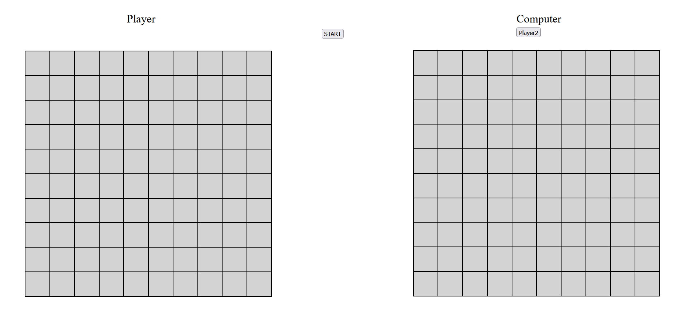

Projecten
-
Hoger&Lager

Bij het drankspel hoger of lager is het de bedoeling dat de deler een kaart neerlegt en omstebeurt een persoon moet raden of de kaart hoger of lager is dan de kaart die neergelegd is. Wanneer je het fout raad, drink je! Zet dit voort totdat het hele pak kaarten op tafel ligt.
-
Zeeslag
Wat zijn de spelregels van Zeeslag? Zeeslag is een spel voor twee waarin je elkaars vloot probeert te laten zinken. Je doet aanvallen door coördinaten te noemen. De andere speler geeft telkens aan of de genoemde coördinaat een treffer is of een misser. Wie als eerste de vijf schepen van de tegenstander keldert, wint het spel!
-
Geheugenspel

Zet je brein op scherp met dit actieve en grappige kaartspel. Onthoud acties, geluiden en niet-bestaande woorden terwijl de andere spelers je proberen af te leiden. Probeer daarna binnen de tijd de acties uit te voeren, de geluiden te maken en de niet-bestaande woorden te zeggen.